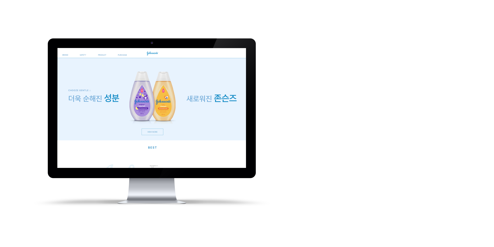

존슨즈베이비 사이트를 새롭게 리디자인 해보았습니다.
redesign the Johnson's Baby site.

존슨즈베이비 리디자인 사이트
존슨즈베이비의 주 컬러인 파란색과 흰색을 기본으로
퓨어하고 깔끔한 느낌이 강조 될 수 있게끔 리디자인 하였습니다.
기존의 어우러지지 않는 배너를 새롭게 디자인하여 넣어보았습니다.
color
font
Pretendard